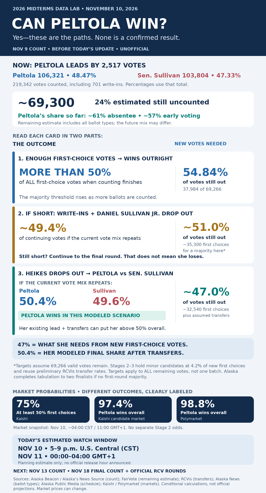

+2,517
Peltola’s first-choice lead
106,321 votes for Mary Peltola; 103,804 for incumbent Sen. Dan S. Sullivan.
Follow the votes still to come, explore how rankings can change the finish, and see why Alaska’s calendar stretches beyond election night.
Snapshot: November 9 count • Reviewed November 10, 2026 • UnofficialThis page is a dated explainer, not a live feed. A scenario is not a race call. The controls below do not change the published results in the main tracker.
106,321 votes for Mary Peltola; 103,804 for incumbent Sen. Dan S. Sullivan.
FairVote’s 76%-counted assumption implies 69,266 remaining, about 24% of a projected 288,608 total.
If nobody wins a first-choice majority, tabulation follows the last scheduled ballot count.
| Candidate | Votes | Share including write-ins |
|---|---|---|
| Mary Peltola · Democrat | 106,321 | 48.47% |
| Dan S. Sullivan · Republican incumbent | 103,804 | 47.33% |
| Gerald Heikes · Republican | 4,865 | 2.22% |
| Daniel J. Sullivan Jr. · Independent | 3,651 | 1.66% |
| Write-ins | 701 | 0.32% |
Total: 219,342 valid first choices, including write-ins. Some dashboards show 48.6% for Peltola because they omit write-ins from their displayed denominator. This page uses the full total consistently. Statewide ballots cast, valid votes in this race, and scanned ballot records are different totals. Full candidate count ↗ · Alaska Beacon’s update ↗
The division’s November 9 ballot statistics list 42,435 by-mail ballots issued and 30,595 received: 11,840 issued ballots were not yet returned, about 27.9% of those issued. Some may never return, arrive too late, or fail eligibility review. Received does not mean already included in results.
Across all early, absentee and questioned categories, 126,088 had been received. Alaska News estimated about 62,700 were not yet reflected in results, including roughly 20,000 early and 7,589 questioned ballots. That backlog is broader than mail, and is not a Senate-only valid-vote tally.
Peltola had won approximately 61% of counted absentee votes and 57% of early votes. Those observed shares support an optimistic scenario for her, but do not establish how every outstanding group will vote.
Official ballot-category statistics ↗ · Backlog and vote-type analysis ↗
Change the remaining vote and transfer assumptions. The model adds those votes to the reported count, then follows the rankings. Its output is a conditional calculation, not a forecast.
The default is an estimate, not a confirmed backlog.
Of all new valid votes, before transfers. The other minor candidates keep their combined 4.20% share; the rest goes to Sen. Sullivan.
Among his ballots transferring directly to Peltola or the senator. The shares going to Heikes and becoming inactive stay fixed.
Among ballots transferring to either finalist. The observed inactive share stays fixed. This includes ballots Heikes inherited earlier.
Model order: unresolved write-ins → Daniel Jr. → Heikes. The ranking file covers a smaller set than the full first-choice count. Applying its patterns statewide is an assumption.
| Round | Peltola | Sen. Sullivan | Other continuing votes | Inactive | Peltola’s active share |
|---|
For each additional valid vote, the model reserves the current proportions for Heikes (4,865 / 219,342), Daniel Jr. (3,651 / 219,342) and write-ins (701 / 219,342). The Peltola slider assigns her first choices; Sen. Sullivan gets the remainder. Reported votes already counted do not change.
Default transfers use these observed transitions from the preliminary RCVis table. They are round-specific, not final-destination percentages for every original voter:
| Eliminated pool | To Peltola | To Sen. Sullivan | To Heikes | Inactive |
|---|---|---|---|---|
| 660 write-in votes | 121 | 96 | 98 | 290 |
| 3,508 Daniel Jr. votes | 1,013 | 565 | 639 | 1,291 |
| 5,101 Heikes votes | 899 | 2,199 | — | 2,003 |
The remaining 55 of the write-in pool go to Daniel Jr. The model therefore carries them into his elimination. Inactive totals accumulate across rounds. The toy example below is separate from this dataset.
The first-choice target is floor((219,342 + additional votes) / 2) + 1 − 106,321. Later targets are found by solving for the smallest Peltola share of new first choices that leaves her above half of active votes at that stage, using the selected transfers. If the current lead already suffices, the target can be zero. If the allowed new-vote allocation cannot get her there, the page says so. The calculator does not estimate the probability that a particular vote share will occur.
Rounding can display 50.00% at an extremely narrow win or loss. The model uses unrounded totals to determine the leader. A numerical tie is identified separately; Alaska resolves an actual final tie by lot.
Inspect the preliminary round table ↗ · Why the ranking file differs from the full count ↗
Rankings are instructions for moving a vote if a preferred candidate is eliminated. They are not extra votes counted for every candidate at once.
A candidate with more than half of first-choice votes wins. A temporary percentage above 50% during an incomplete count does not stop eligible ballots from being counted.
If there is no first-round majority, eliminate the lowest continuing candidate. Their ballots move to each voter’s next available continuing choice. Votes already with a continuing candidate stay there.
Alaska completes tabulation to two candidates unless someone won in the first round. The finalist with more votes wins. Ballots without a usable remaining choice are inactive.
Division of Elections: how the rounds work ↗ · Tabulation settings and continuing ballots ↗
This invented teaching example shows how a candidate can start with 40% and finish with a majority. It is not the actual Senate count.
Tile key: P = Peltola, S = Sen. Sullivan, H = Heikes, J = Daniel Jr., — = inactive. Each tile remains one voter, whichever candidate receives it.
Daniel Jr. → Heikes → Peltola: first counts for Daniel Jr., then moves to Heikes, then to Peltola. It contributes one vote in each round.
Heikes only: counts for Heikes until he is eliminated. With no further ranking, it becomes inactive. Its earlier vote still appears in the record; it simply cannot choose between the remaining candidates.
Peltola first: stays with Peltola throughout. Lower rankings are never used while she remains in the race.
In the example’s last round, 19 of the 20 ballots still have a usable choice. Peltola’s 10 votes are 52.63% of 19 active votes, although they are exactly 50% of the original 20. The final comparison uses continuing votes, not a permanently fixed election-night denominator.
Alaska treats a ballot as inactive when no continuing candidate is ranked, when an overvote blocks the highest continuing ranking, or when two consecutive skipped rankings block the next choice. A single skipped rank can be passed over. These are ballot-interpretation rules, not evidence that all such voters left their second choice blank.
Unresolved write-in names are not treated as separate continuing candidates unless the division’s resolution criteria are met. The preliminary analysis groups write-ins as a pool. Its transfer step is a modeling convenience; the division’s official handling controls the real election.
The ranked-choice calculation runs after the eligible ballots are assembled. Alaska’s receipt deadlines, regional counting schedule and verification work explain much of the gap between election night and the official rounds.
Eligible domestic absentee mail can arrive through November 13; overseas mail through November 18. They must have been postmarked by November 3. A ballot reaching an office later can be lawful without being a vote cast after the election.
Regional-office early votes through the Thursday before Election Day are counted on election night. Those cast from Friday through Election Day are scheduled for the seven-day count. “Voted early” does not mean “already reported.”
Officials check eligibility and compare records before adding later early and absentee votes. Questioned ballots also need review. The November 9 reporting described ballots held while Election Day registers were cross-checked to prevent double voting.
Some communities are reachable only by boat or plane. Weather and distance complicate the movement of ballots and materials. Alaska had extended post-election counts before adopting ranked-choice voting.
Scheduled post-election updates fall seven, ten and fifteen days after Election Day, with extra updates possible. Officials plan regional work and then publish new totals. An unchanged results screen does not mean no one is working on ballots.
The public cast vote record lists scanned ballot rankings; hand-count-only ballots are absent. Analysts can run unofficial rounds, but those may cover fewer votes than the first-choice totals. Official RCV follows the last scheduled count on the fifteenth day.
What the public ranking file contains ↗ · Official sequence ↗
The dates below are scheduled. No exact release hour has been verified. A planning window is not an appointment or a guarantee that the race will be called.
A substantial early/absentee batch is expected; questioned-ballot counting begins. Updated ranking records may let analysts revise their unofficial RCV calculations.
Planning window: 5–9 p.m. CST, November 10 / 00:00–04:00 GMT+1, November 11.
Another scheduled update. This is the final receipt date for eligible domestic absentee mail; review and additional counts can continue.
Planning window: 5–9 p.m. CST, November 13 / 00:00–04:00 GMT+1, November 14.
Eligible overseas-mail receipt closes. Official eliminations follow the last counting of ballots. The write-in, Daniel Jr. and Heikes steps are parts of one tabulation process, not separately scheduled election days.
Watch: U.S. evening / overnight into November 19 in GMT+1. Tabulation may run later than the earlier planning windows.
The state’s target date follows review. A media call may come earlier; this page does not promise a call time.
The 5–9 p.m. CST watch windows are this page’s broad planning estimates, assuming an afternoon release in Juneau. They are not announced hours. In November, Juneau is three hours behind CST and ten behind GMT+1.
Conversion example only. It does not predict when an update will appear.
Kalshi’s displayed probability for this specific vote-share contract. Its “at least 50%” threshold differs from the legal requirement of more than half for an outright majority.
Kalshi vote-share market ↗Kalshi’s candidate market, including any ranked-choice path. This is not a separate probability of winning after a particular elimination.
Kalshi candidate market ↗Polymarket’s displayed candidate estimate. It is a different market, not an independent confirmation that the election is over.
Polymarket ↗Frozen snapshot checked November 10, approximately 4 a.m. CST / 11 a.m. GMT+1. Prices change. These are market-implied probabilities, not official election forecasts or calls. No separately verified probability is supplied for winning immediately after Daniel Jr.’s elimination.
The static graphic preserves the November 9 count and November 10 market snapshot. The calculator above can explore other assumptions; the graphic does not change with the controls.

Calculator design: deterministic arithmetic using the displayed source snapshot and transfer assumptions. Educational example: invented 20-ballot dataset. No individual voter identity is used. All charts and outcome text update locally in your browser.